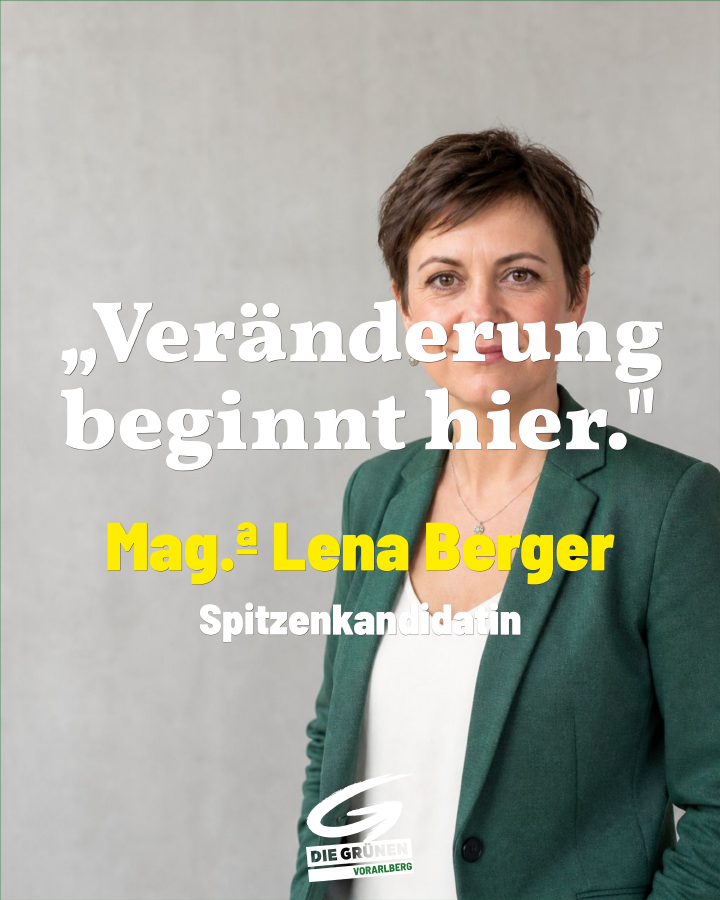
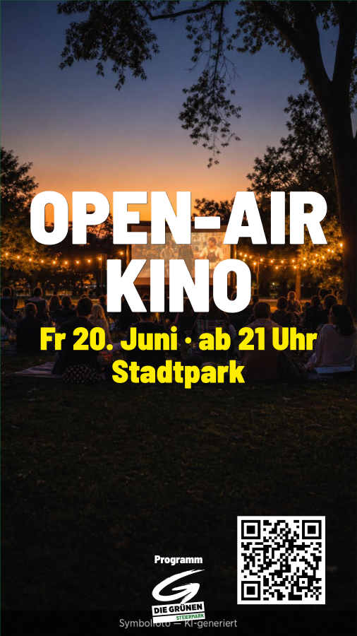
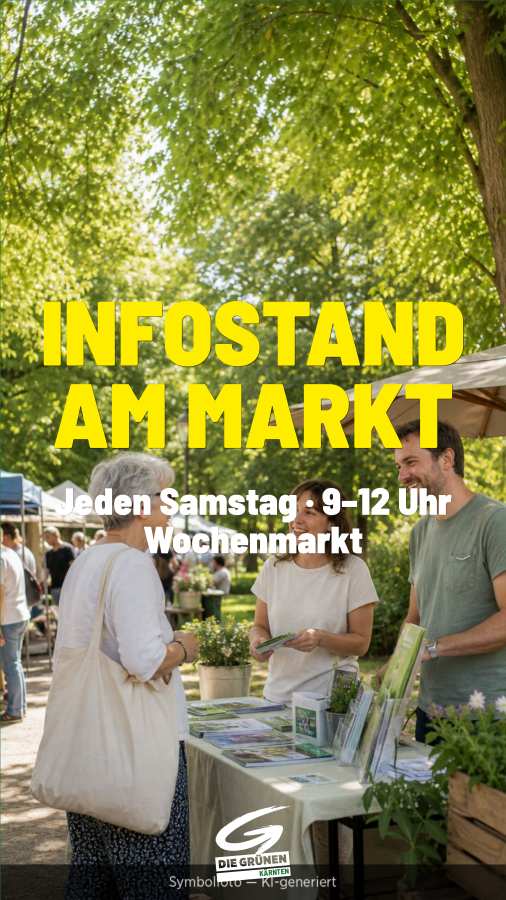

Für Schlagzeilen & Kernbotschaften
Der hohe Schriftschnitt füllt die Fläche und bleibt auch klein noch lesbar.
Der Bildgenerator bietet im Textschritt zwei Schriften an — diese Seite zeigt, wann welche passt.
Beide Schriften kommen aus dem Grünen Schriftsystem. Die Standardschrift trägt fast alles — Überschriften wie Fließtext. Die betonte Serifenschrift ist die Ausnahme für Zitate und einzelne Akzente. Im Zweifel: die Standardschrift.
Die Voreinstellung — passt für die allermeisten Sujets.
Die kräftige, schmal laufende Standardschrift (technisch: Barlow Semi Condensed) ist die Arbeitsschrift des Bildgenerators. Sie ist gut lesbar, wirkt klar und plakativ und funktioniert von der großen Schlagzeile bis zum kurzen Fließtext.
Der hohe Schriftschnitt füllt die Fläche und bleibt auch klein noch lesbar.
Ruhiges, gleichmäßiges Schriftbild — der Inhalt steht im Vordergrund, nicht die Schrift.
Der Akzent — sparsam einsetzen, sonst verliert er seine Wirkung.
Die betonte Serifenschrift (technisch: Vollkorn) bringt einen wärmeren, persönlicheren Ton. Sie eignet sich für Zitate und einzelne hervorgehobene Wörter — nicht für ganze Textblöcke.
Die Serifen geben dem Satz eine ruhige, menschliche Note.
Ein hervorgehobenes Wort oder eine kurze Aussage — als bewusster Kontrast zur Standardschrift.

Verschiedene Formate und Themen — die meisten in der Standardschrift, zwei mit der betonten Serifenschrift als Akzent.


Alle Beispiele wurden mit dem Generator gestaltet. Die verwendeten Hintergrundfotos sind KI-generiert und entsprechend als „Symbolfoto — KI-generiert" gekennzeichnet.
Standardschrift für Headlines, Fließtext und fast alles. Betonte Serifenschrift nur für Zitate und einzelne Akzente — bewusst und sparsam.